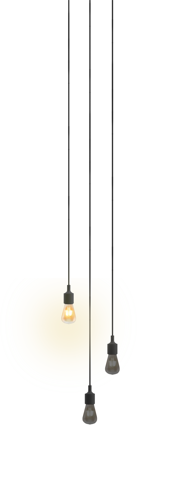
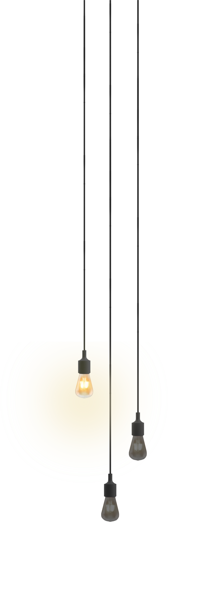

Arquitecto con más de 18 años de experiencia en diseño de proyectos y administración de construcción. Personalidad orientada a la solución de problemas y el cuidado al detalle. Curiosidad científica y artística en el ámbito profesional, con fuerte devoción a la estética de los objetos arquitectónicos, pero también a su pertinencia y solución técnica, así como a la gestión administrativa de su construcción. Es por esta última característica la que me ha llevado a incursionar en el estudio de la construcción de sistemas informáticos para el control informativo de los procesos de construcción, y para la que actualmente me encuentro estudiando el séptimo semestre de la carrera de Ingeniería Informática. En este portafolio se muestran algunas referencias de mi trabajo en este ámbito. Adicionalmente, puede visitarse nuestro portafolio en en el siguiente vínculo: 3a+c Taller de Arquitectura.